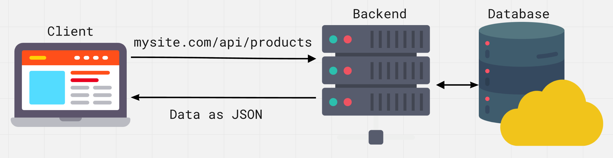
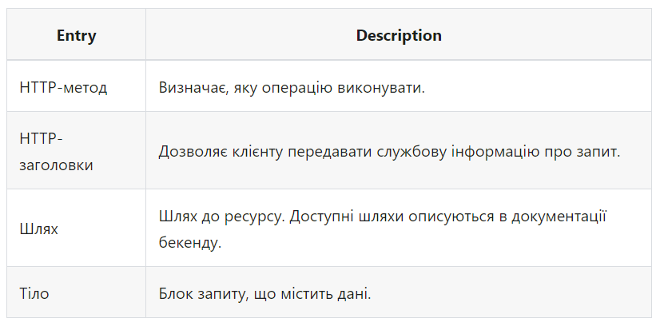
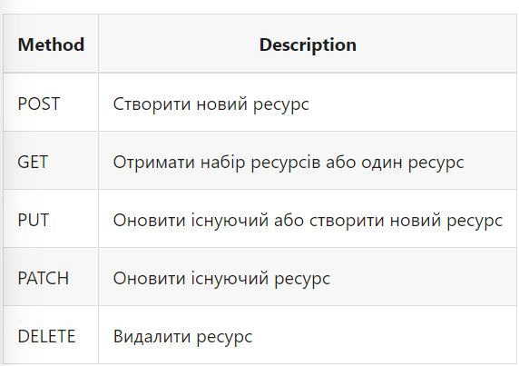
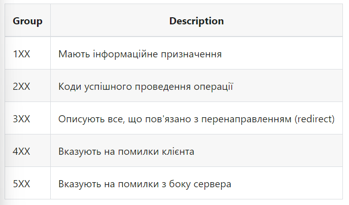

REST API
Сервер - це комп'ютер зі спеціальним програмним забезпеченням. Бекенд - це програма, розташована на сервері, здатна обробити вхідні HTTP-запити і має набір готових дій на певні запити.
API (інтерфейс прикладного програмування) - набір чітко визначених правил зв'язку між різними програмними компонентами. Інтерфейс описує, що можна попросити програму зробити і що буде в результаті.
REST (representational state transfer) - стиль бекенд-архітектури, ґрунтується на наборі принципів, які описують, яким чином визначаються і адресуються мережеві ресурси.
REST API - бекенд побудований за принципом REST. Слугує прошарком між веб-застосунком і базою даних. Має стандартний інтерфейс для звернення до ресурсів. Працює як веб-сайт, ми посилаємо HTTP-запит з клієнта на сервер, а у відповідь, замість HTML-сторінки, отримуємо дані в JSON-форматі.
Формат запиту
REST-сервіс вимагає, щоб клієнт робив запит на додавання, видалення або зміну даних. Запит може складатися з наступних частин.
HTTP-методи
Виділяють кілька основних HTTP-методів для роботи з REST-сервісом.
HTTP-заголовки
Заголовки містять службову інформацію, що стосується контенту запиту. Наприклад, тип контенту, який клієнт може обробити у відповіді від сервера (заголовок Accept) або, який описує тип ресурсу, який клієнт відправляє серверу або сервер відправляє клієнту (заголовок Content-Type).
Accept: text/html Content-Type: application/json
MIME-типи - варіанти типів контенту. Використовуються для зазначення вмісту запиту і відповіді, складаються з типу і підтипу, які розділені скісною рискою /. Наприклад, текстовий файл, що містить HTML, буде описаний типом text/html. Якщо файл містить CSS, він буде описаний як text/css. Дані у форматі JSON будуть описані як application/json. Якщо клієнт очікує text/css, а отримує application/json, він не зможе розпізнати і обробити контент відповіді.
Шляхи
Запити повинні містити шлях до ресурсу, над яким виконується операція. Доступні шляхи (ендпоінти, ресурси) описуються в документації бекенду.
GET <https://bookstore.com/api/orders> Accept: application/json
Такий шлях явно вказує на ресурс, навіть якщо ви його ніколи раніше не бачили, тому що він є ієрархічним і описовим. Ми виконуємо запит для отримання колекції замовлень.
Для того щоб отримати один елемент колекції, його ідентифікатор додається до ресурсу. Розглянемо запит на читання одного замовлення з ідентифікатором 289.
GET <https://bookstore.com/api/orders/289> Accept: application/json
Остання частина шляху називається динамічний параметр і в документації описується як /ресурс/:параметр. Ресурс не змінюється, це шлях до цілої колекції, а значення параметра змінюється для кожного її елемента.
Коди відповідей
На запит клієнта сервер відправляє відповідь, яка містить код стану, щоб інформувати клієнта про результат операції. Коди діляться на групи.

ЦІКАВО:
Немає потреби пам'ятати всі коди з кожної групи, достатньо знати
найпоширеніші. Решту завжди можна подивитися в довіднику HTTP-кодів.
Запит-Відповідь
Припустимо у нас є застосунок, який дозволяє переглядати, створювати, редагувати і видаляти клієнтів і замовлення невеликого книжкового магазину, бекенд якого розміщений на bookstore.com/api. Використовуючи отримані знання, опишемо псевдокодом процес запит-відповідь до бекенду.
Якщо ми хочемо отримати дані про всіх клієнтів, GET запит буде виглядати наступним чином.
GET bookstore.com/api/customers Accept: application/json
На що сервер відправить нам таку відповідь.
Status: 200 OK Content-Type: application/json Body: JSON-дані про всіх клієнтів
Для отримання даних одного клієнта ми вказуємо його ідентифікатор, уточнюючи GET запит.
GET bookstore.com/api/customers/289 Accept: application/json
На що сервер відправить нам таку відповідь.
Status: 200 OK Content-Type: application/json Body: JSON-дані про клієнта
Для того щоб додати нового клієнта, виконуємо POST запит.
POST bookstore.com/api/customers
Content-Type: application/json
Body: { "username": "Mango", "email": "mango@gmail.com" }
Сервер додає унікальний ідентифікатор і повертає увесь об'єкт як результат.
Status: 201
CreatedContent-type: application/jsonBody:
{ "id": 18674,
"username": "Mango",
"email": "mango@gmail.com"
}